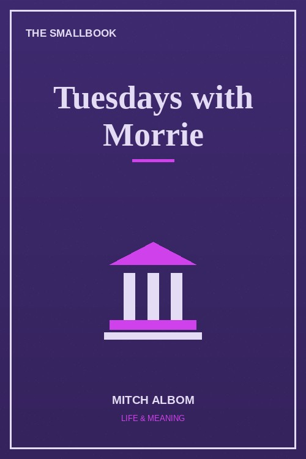

Why Did The Titanic and the Unsinkable Myth Fail?
Unsinkable Was a Marketing Word
What happened
RMS Titanic was the largest moving object humans had built: 46,000 tons, sixteen watertight compartments, and a reputation, carefully nourished by her owners and the press, for being practically unsinkable. She carried lifeboats for about half the people aboard, which exceeded the regulations of the day and matched the era's true belief: the ship was her own lifeboat. On the night of 14 April 1912, crossing the North Atlantic at near full speed through a known ice field after multiple wireless warnings, she struck an iceberg that opened her side across too many compartments. She sank in under three hours. More than 1,500 of the roughly 2,200 aboard died, including hundreds who could have been saved by boats that left half empty in the early confusion. The disaster rewrote maritime law within two years: lifeboats for all, 24 hour radio watches, the International Ice Patrol, and the first SOLAS safety convention. The autopsy matters because every element was a system behaving normally: a schedule to keep, warnings filed as information rather than orders, capacity calculated for regulation rather than for the ocean, and confidence so complete it was mistaken for a safety feature.
The fatal mistake
The first failure was speed governed by schedule and pride: warnings arrived all day, yet the ship maintained pace into an ice field on a flat calm night, the worst visibility for spotting bergs. The second was regulatory capture by success: lifeboat rules dated from smaller ships, and Titanic's owners treated exceeding them as generosity rather than asking what the sea required. The third was the binoculars locked away, lookouts handicapped by an officer change and a missing key. Overall sat the deepest error, confusing a design margin with immunity: because she could float with four compartments flooded, everyone behaved as if flooding itself had been retired.
The lesson
A safety margin is not a story to tell passengers; it is a budget that reality will spend without asking. Regulations are floors written by the last disaster, not ceilings of prudence for the next one. Warnings that do not change behaviour are decorations: a message earns its name only if it slows the ship. And beware the word unsinkable in any industry, technical debt, market position, reputation. The moment an organisation believes its own brochure, it has quietly sold its lifeboats for deck chairs.
The antidote book

A dying professor teaches his last course to one student. The subject is the meaning of life, and the classroom is his living room, every Tuesday.
READ THE SUMMARY OPEN INTERACTIVE BOOKQuestions people ask about The Titanic and the Unsinkable Myth
Why did The Titanic and the Unsinkable Myth fail? The first failure was speed governed by schedule and pride: warnings arrived all day, yet the ship maintained pace into an ice field on a flat calm night, the worst visibility for spotting bergs. The second was regulatory capture by success: lifeboat rules dated from smaller ships, and Titanic's owners treated exceeding them as generosity rather than asking what the sea required. The third was the binoculars locked away, lookouts handicapped by an officer change and a missing key. Overall sat the deepest error, confusing a design margin with immunity: because she could float with four compartments flooded, everyone behaved as if flooding itself had been retired.
How much was lost? 1,517 lives, and the word unsinkable retired forever
What is the lesson? A safety margin is not a story to tell passengers; it is a budget that reality will spend without asking. Regulations are floors written by the last disaster, not ceilings of prudence for the next one. Warnings that do not change behaviour are decorations: a message earns its name only if it slows the ship. And beware the word unsinkable in any industry, technical debt, market position, reputation. The moment an organisation believes its own brochure, it has quietly sold its lifeboats for deck chairs.
The Titanic and the Unsinkable Myth kyun fail hua? In simple English: The first failure was speed governed by schedule and pride: warnings arrived all day, yet the ship maintained pace into an ice field on a flat calm night, the worst visibility for spotting bergs. The second was regulatory capture by success: lifeboat rules... The cost was 1,517 lives, and the word unsinkable retired forever.
Keep digging
More historical failures · Open the full Graveyard
Read the antidote book summary: Tuesdays with Morrie
Related failures
- Why did The Churning of the Ocean fail? ~5000 BCE (epic) · The Great Co-operation That Produced the Poison First
- Why did The Nanda Empire fail? ~321 BCE · The Richest Empire in India, Lost Because the King Couldn't Keep a Promise
- Why did The Kurukshetra War fail? ~3000 BCE (epic) · The War Everyone Wanted That Destroyed Everyone Who Wanted It
- Why did The Harappan Collapse fail? ~1900 BCE · The Advanced Civilization That Vanished Into Its Own Success
- Why did Easter Island fail? ~1600 · They Cut Down the Last Tree
- Why did Qin Shi Huang fail? 210 BC · The Emperor Who Drank Immortality to Death
They paid full price. You get the lesson in simple English.